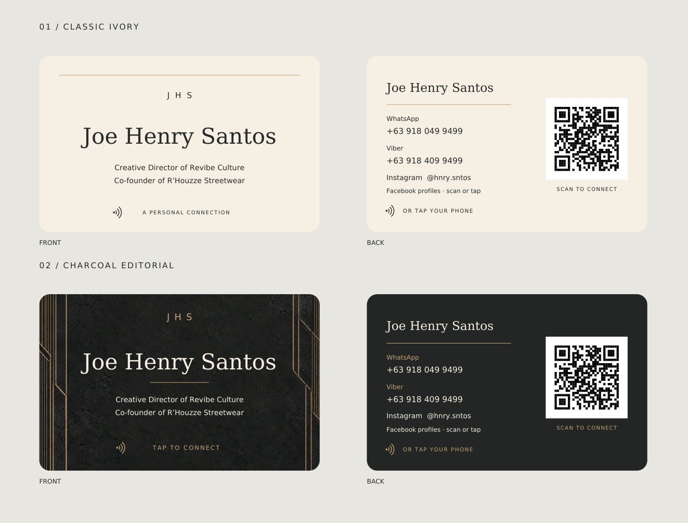

Joe Henry Santos / Two card options
Classic ivory or charcoal with tan geometric accents. Each option includes a front and back, with a QR code linking to Joe’s page.

For your printer
Finished CR80 size: 85.6 × 53.98 mm. Each PDF has two pages: front first, back second. Print at 100% / Actual size, not Fit to page.
Use the card-size PDF if your PVC printer requires exact dimensions. The bleed PDF includes 3 mm extra on every edge (91.6 × 59.98 mm total) with the final trim area defined. Confirm which version your printer needs.
Rounded corners are shown in the preview; print artwork extends to the edges for trimming. Tan accents are printed color, not metallic foil. PDFs use RGB artwork; ask your printer to apply its normal color profile and run a sample first. The QR code is ready; the NFC chip must separately be programmed with Joe’s existing webpage URL.